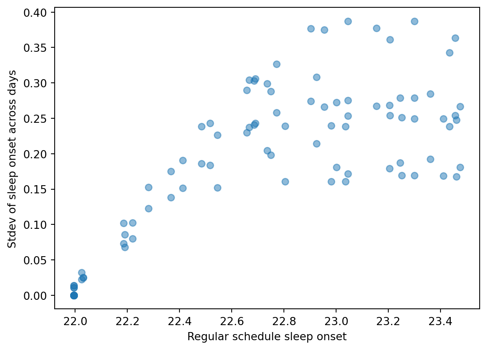
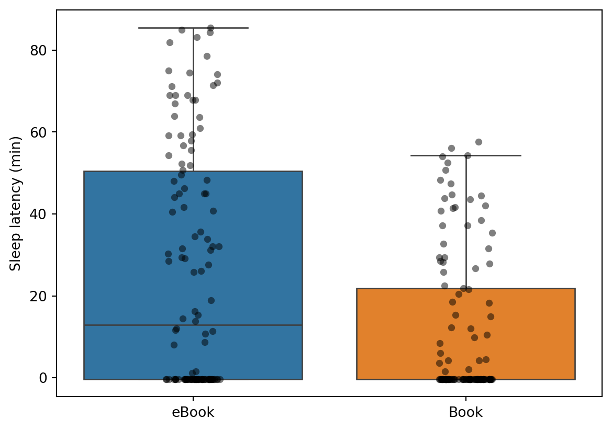
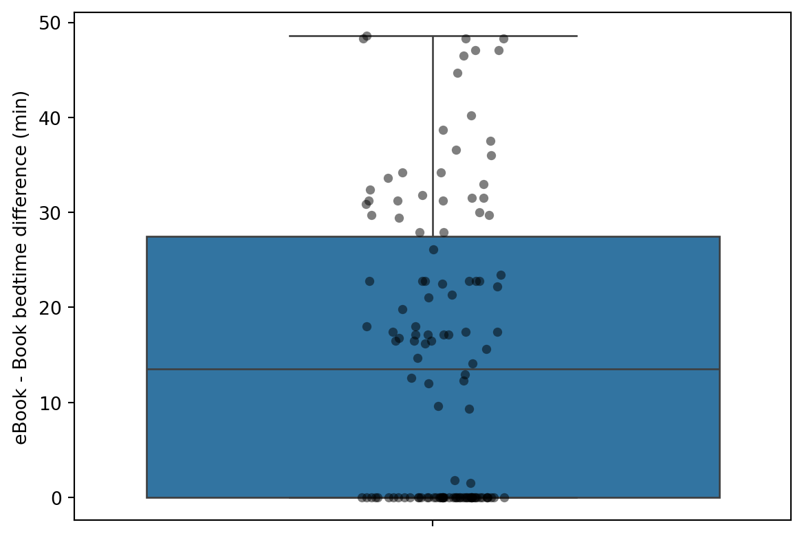

# calculate the sleep times closest to 7.5 hoursdistance = np.abs(selected_parameters['sleep_time'] -7.5)idx = np.argmin(distance)print(selected_parameters.iloc[idx])
we select only those with a sleep duration that is greater than 6.5 hours, leaving us with 61 parameter sets. The distribution of sleep duration is shown below:
For each of these parameter sets, we simulate the model under three light schedules:
Regular
Chang14 with eBook on the first week (book on the second week)
Chang14 with eBook on the second week (book on the first week)
For all these schedules, there is an 8 hour total darkness region that spans from 10 PM (22:00) to 6 AM (6:00).
We can analyze the sleep onset for each simulation condition:

As expected the regular condition has no change in sleep onset across days (it does between different simulations). For the Chang14 light schedule, we see that the sleep onset varies over the two weeks. When the eBook is on the first week (days 2-6), sleep onset remains relatively constant for that first week. However when reading is done with a book (days 8-12), the sleep onset starts to decrease. On the contrary, when the eBook is on the second week, sleep onset starts to decrease at first (book reading), and then increases (eBook reading).
There are many parameter sets that have a regular sleep onset that is close or equal to 22 hours (time the lights go off). Those sets tend to have little to no change when simulated under the Chang14 light schedules:

Difference in sleep onset between book and ebook days
As in [@chang_evening_2015], we plot the sleep latency (sleep_onset - 22.0) for each reading condition on the last day of reading:

Additionally, we calculate the sleep onset difference (within each simulation) between the last day of each reading condition:
Phase shift between book and ebook days
Let’s check how different the circadian state is for the different schedules on day 6 (plotting all simulated parameter sets):
E:\Internship-Arcascope\what_evening_light_matters\evening-light\.venv\Lib\site-packages\IPython\core\pylabtools.py:170: UserWarning:
Creating legend with loc="best" can be slow with large amounts of data.
It is surprising that there isn’t a spread between circadian states for different parameter sets, they are all on top of each other. On the other hand, if we plot the sleep pressure, we see a spread consistent with the spread in sleep onset times:
Why is this the case?
I think the reason is because of the way the sleep homeostat is implemented. The only way that the sleep homeostat can affect the circadian state is by switching to sleep at a moment when the light is greater than zero. If this happens, the input light to the circadian model goes to zero. However, in these simulations we are forcing the model to be awake when the light is on, so the light schedule is the same for all simulations. This means that the circadian state is the same for all simulations.
The only thing that can change the circadian state is changing the schedule, which does affect the final result as seen on the circadian state plot.
Therefore we can only obtain two values for the phase shift between book and eBook days, one for each schedule:
The phase shift (calculated as the CBTmin difference between each condition) is 44.40 min for the eBook first condition and 14.40 min for the eBook second condition.
Let’s check if this is true for all parameter sets: